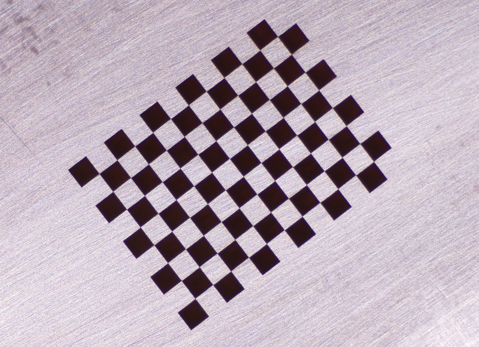
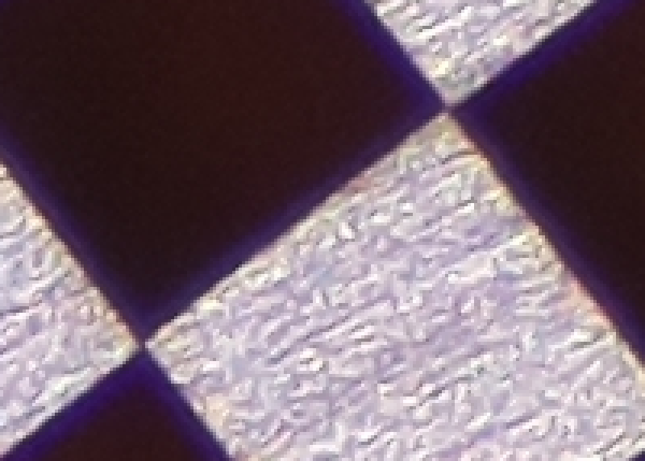
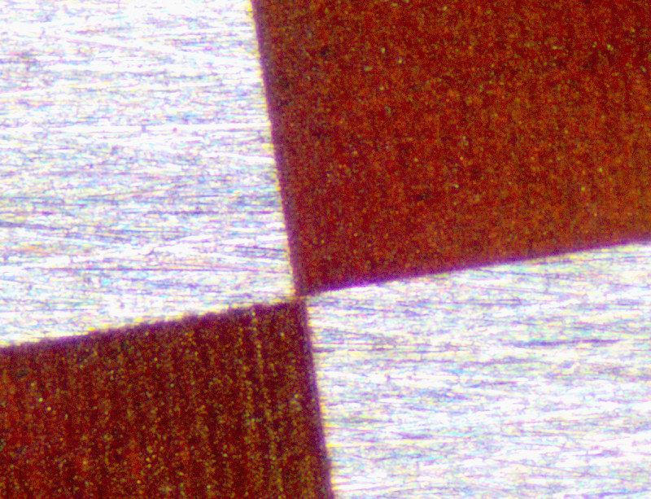

Checkerboard
The update increment is smaller this week; so it goes. Before using the computer vision system to fully Cartesian-ify the stage, I need to correct for lens and camera distortion. OpenCV provides some terrific documentation that walks the user through the process; a few colleagues also recently got a similar system set up for another research project, so I'll definitely bug them when my code doesn't work. Calibration requires a checkerboard pattern of known size which is photographed using the camera setup at various angles. These images are then processed and fed into an algorithm that corrects for intrinsic and extrinsic errors.Metrology is a chain of trust; you calibrate your system based on another system, which then traces its calibration back to another system and eventually an agreed-upon standard or, in modern times, a fundamental physical constant. In this vein, printing out a checkerboard links the accuracy of my machine to the optical encoder strip that provides position information to a print head (or however drum-based laser printers do it). Instead, I opted to create the calibration pattern using our Oxford laser micromachining system. It uses nice Aerotech linear stages and is built of massive granite slabs, and can reliably hit micron repeatability if targets are well-fixtured.
The Oxford eats Gcode, so I wrote a Python script (here, in Jupyter Notebook format) to generate checkerboard patterns. After running a few tests, I used 320 grit sandpaper on a flat glass sheet to lap a blank PCB (relatively) flat, then laser engraved a 9x12 checkerboard with 1.5 mm boxes. Contrast is great with a well-positioned light source; here is a cropped image from the PiCam:

The Oxford has a nanosecond-pulsed 532 nm source rated for 5 watts of average power and a beam forming system that delivers a ~15 micron Gaussian spot. I ran the laser at 20 kHz with the attenuator set to 2%, and rasterized the filled boxes at a 10 micron pitch. Feed rate was 3 mm/s; with acceleration at each end, this resulted in a total cut time of just over an hour. A 200 pixel wide sliver of the image above, blown up without interpolation, shows good resolution at the limit, albeit with noticable chromatic abberation:

ImageJ tells me that I'm resolving ~80 pixels per millimeter, or roughly ~2000 DPI. So still in the ballpark of the resolution of a commercial printer, but I'm more worried about accuracy over the entire ~15 mm test grid. Worth it? Or at least, an excuse to write a bit of Python and fire up the Oxford? In any case, I may have off-by-one-errored. The test pattern imaged with an optical microscope shows what looks like filled square corner overlap:

Apologies for the lack of scale bar; in any case, the overlap seems to be on the order of a single trench width (see the corduroy pattern, bottom left), so it's probably a less-than-10-micron problem. Onward, with hopefully more progress next week.